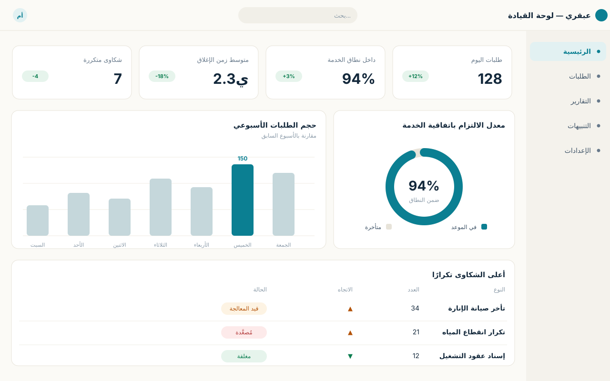
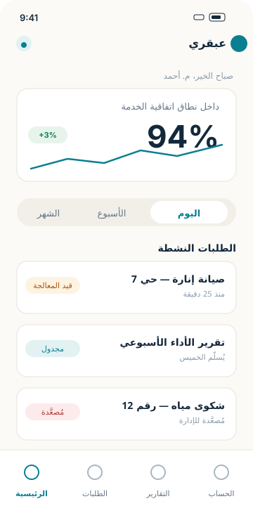
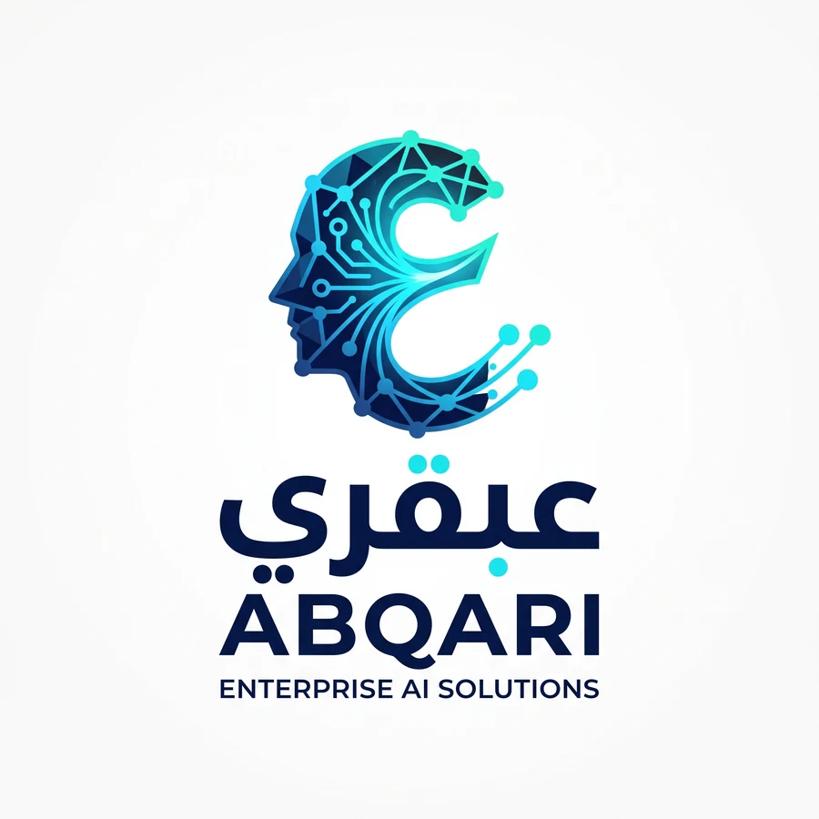

رقمنة بلا أوراق
تحويل النماذج والمستندات إلى بيانات منظمة وقابلة للبحث والتتبع، مع رحلة رقمية واضحة من البداية إلى الإغلاق.
عبقري رائدة في بناء طبقات ذكاء اصطناعي مدمجة للمحاسبة والمساءلة والكفاءة التشغيلية. نضيف طبقة مساءلة وكفاءة مدعومة بالذكاء الاصطناعي فوق أنظمتك القائمة — دون هدم ما يعمل، ودون استبدال أنظمتك.
تتبع دقيق لكل إجراء وسند وقرار داخل أنظمتك الحالية، ليصبح كل قرار مرتبطاً ببياناته وإجرائه.
أتمتة ذكية للمهام المتكررة وربط الأنظمة والقنوات، تقليلاً للجهد اليدوي ورفعاً واضحاً للإنتاجية.
تحليلات ذكية تستبق الانحراف قبل وقوعه، وتحوّل بياناتك إلى قرارات قابلة للتنفيذ.
منصة مؤسسية تحوّل النماذج الورقية والإجراءات اليدوية إلى تدفقات رقمية مترابطة، تربط بيانات الجهة بقنواتها، وتنتهي بقرار واضح قابل للتنفيذ.
نضيف طبقة ذكاء اصطناعي فوق الأنظمة والقنوات القائمة، لتربط البيانات بالقرار من دون هدم ما يعمل بالفعل.
تحويل النماذج والمستندات إلى بيانات منظمة وقابلة للبحث والتتبع، مع رحلة رقمية واضحة من البداية إلى الإغلاق.
توجيه الطلبات، ضبط أزمنة الخدمة، التصعيد الذكي، وتوثيق المسؤوليات ضمن تدفق عمل واحد.
تصنيف وتحليل وتوليد رؤى وتوقع أنماط متكررة، مع واجهة ذكية لخدمة المواطن وصانع القرار.
عبقري ينسّق الخطوات عبر طبقات الاستقبال والذكاء والتنفيذ والقيادة، ليمنح كل طلب مسارًا قابلاً للقياس وكل قرار أساسًا واضحًا من البيانات.
نماذج أولية للواجهة تُظهر كيف تتجمّع مؤشرات الجهة في شاشة واحدة: الوضع الحالي، الانحرافات عن اتفاقيات الخدمة، وما يحتاج قرارًا اليوم.


واجهات استرشادية من مراحل التطوير المبكرة — تُستبدل بلقطات من النسخة الفعلية عند اكتمال المنتج.
تعرض الأرقام التالية نتيجة محاكاة أولية واردة في وثيقة الحل، وليست نتائج تشغيل حكومي فعلي. تُعاير القيم في أي تجربة استرشادية ببيانات الجهة الحقيقية.
طبقات مستقلة ومترابطة تسمح بالتكامل مع القنوات الحالية، وإضافة الأمان والحوكمة وسجلات التدقيق عند التوسع.
قنوات الخدمة الحالية، النماذج، والرسائل ضمن نقطة دخول موحّدة.
التصنيف، كشف التأخير، التقارير، والتنبؤ بالأنماط المتكررة.
تطبيقات ميدانية، إثباتات الإغلاق، والموقع وسجل الإجراءات.
لوحات لحظية وتقارير تنفيذية تدعم القرار والمتابعة.

نرقمنه من الأسبوع الأول، نربطه ببيانات الجهة، ثم نضيف طبقة الذكاء التي تقيس وتتنبأ وتقترح الخطوة التالية.
تواصل لبدء تجربة استرشاديةsupport@3bqary.com · مدنتي، القاهرة، مصر